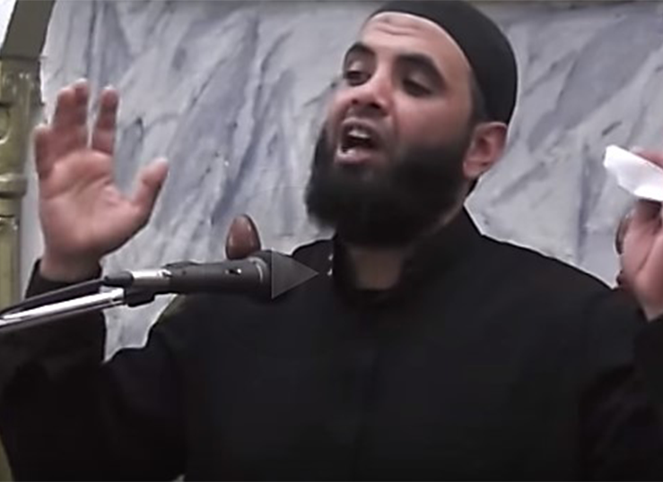
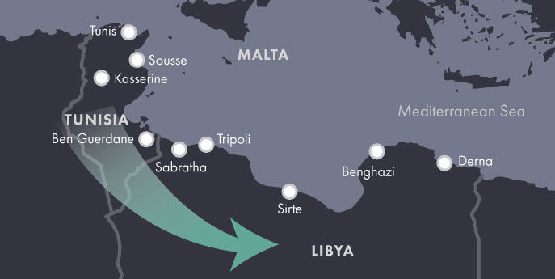

The Path Taken
Tunisian fighters travel well-worn paths to reach foreign battle zones. Since 2011 most Tunisian recruits bound for Syria have crossed overland from Turkey through several main routes: direct air travel from Tunisia to Turkey, air and sea travel to Turkey via Libya, or air travel to Turkey via a third country. Once in Turkey, facilitators working with jihadi-salafi groups provide logistical support, including lodging and transportation for the journey across the Turkish-Syrian border. These fighter routes are dynamic and shaped by a combination of conditions, including border and visa policies, policing and legal restrictions, and transportation options such as commercial air travel. Individual factors such as an aspiring recruit’s financial means and companions can also influence the path he or she takes.
Since 2011, flows of Tunisian fighters have come in two main waves.
First Wave
From mid-2011 to March 2013, Tunisians traveled relatively freely to Syria via Turkey and Libya. Tunisian authorities at the time had little incentive or legal mandate to stop young Tunisians from traveling to Syria via Turkey, Libya, or any other country. Meanwhile, prominent Tunisian religious leaders and government officials tacitly encouraged fighting the Assad regime. Tunisian jihadi-salafists also saw their fight as being in Syria rather than in Tunisia during this period. Recruits also took advantage of a relative lack of logistical barriers. Tunisians do not require visas to enter Turkey, and direct flights on commercial carriers like Turkish Airlines ferried recruits from Tunis to Istanbul, from where they could continue by plane, car, or bus to the gateway cities of Antakya or Gaziantep.
Second Wave
Since March 2013, mounting concern over radicalized youth has forced Tunisia’s government to take a series of steps to choke off the flow of young Tunisians into Syria and Libya. Along with stricter counterterrorism laws, the government has enforced restrictions on the international travel of people under the age of 35, requiring proof of parental permission to leave the country; has increased border patrols; and has built trenches along key stretches of the Tunisian-Libyan frontier. In response, Tunisian recruits have increasingly turned to indirect paths to reach Turkey via third countries. UN investigations have identified Tunisian fighters traveling through North African and Eastern European countries where Tunisians still benefit from visa-free entry, including Morocco, Algeria, and even Serbia. Libya, however, is the most accessible transit stop—and an increasingly popular final destination for Tunisians seeking to join the Islamic State group (ISG).
Libya: Land of Opportunity
The accessibility of Libya for Tunisians and options for onward travel made it a leading thoroughfare for Tunisian foreign fighters en route to Syria long before it became a significant jihadi-salafi destination. Young Tunisians often journey by land across the Tunisian-Libyan border, sometimes at the official Ras Jedir and Dhehiba crossings. Tens of thousands of Tunisians work in Libya, making it difficult to determine who is traveling for legitimate purposes and who aims to join jihadi groups. Smuggling networks trafficking in licit and illicit goods also facilitate cross-border traffic across the central Jefara region and the vast southern desert. Some Tunisian recruits stay in Libya to train at camps operated by the Islamic State group or other jihadi groups before proceeding to their next destination, which can include returning to Tunisia to carry out attacks, fighting in Libya, or traveling to Syria. From Libya, Tunisian recruits can take sea routes to points on the central and eastern Mediterranean coast or direct flights to hubs such as Istanbul and Casablanca as Libya’s beleaguered air routes permit.
Although fighters take similar and overlapping routes to reach jihadi groups, each individual path and story is unique.
This map depicts routes Tunisian fighters and recruits have traveled to reach the battlefield in Syria and Iraq as well as Libya. The data is compiled from a range of sources including the United Nations, governments, news reports, and third-party analysts. It is not a comprehensive representation of all routes utilized by Tunisian fighters, but rather a sampling of paths taken.
Each of the three leading routes—from Tunisia to Syria via Turkey, from Tunisia to Syria via Libya and then Turkey, and from Tunisia to Libya—is illustrated with the biography of a fighter who made the journey. A fourth biography highlights the role Tunisians have played in facilitating recruitment and transport networks.
Common Routes Used by
Tunsian Foreign Fighters
From mid-2011 to March 2013, Tunisians travelled freely to Syria via Turkey and Libya. Tunisian authorities at the time had little incentive or legal authority to stop young Tunisians from travelling to Syria via Turkey, Libya, or any other route. Prominent Tunisian religious leaders and government officials tacitly or actively encouraged fighting the Assad regime.


Primary Transport Route
Secondary Transport Route

- Click through each fighter to discover more about their journeys
-
The Preacher
Kamel Zarrouk
The Preacher
Kamel Zarrouk


KAMEL ZARROUK was born in or around 1973, a native son of Tunis’s oldest slum. Jebel Al-Ahmar, sprawling along the capital’s northwestern periphery, is known for being overcrowded, underdeveloped, and home to an increasingly politicized salafi community.
Little is known of Zarrouk’s early life—it was rumored he once worked as a nightclub bouncer—but by his 30s, he had taken up preaching at Jebel Al-Ahmar’s Ettawba Mosque and at the campus mosque of a nearby university. After the 2011 revolution, Zarrouk joined Ansar al Shari`a in Tunisia and was often referred to as the group’s deputy leader.
Zarrouk became a household name touring the country with Ansar al Shari`a’s “da`wa tents,” and his incendiary sermons circulated widely on social media (“15 minutes will change your life!” some fans said). Zarrouk used his platform to exhort Tunisians to join jihadi-salafi groups in both Libya and Syria. He notoriously compared Osama bin Laden to the Prophet Muhammad’s companions, who remain revered figures in Islamic history, and made death threats against anti-Islamist members of the Tunisian government and press.
Zarrouk’s role in recruiting youth to jihadi-salafi groups came under growing scrutiny in 2013 as the Tunisian government applied greater pressure on jihadi-salafi activism more broadly. After evading several arrest attempts, Zarrouk fled the country in early 2014. On February 1, 2014, Tunisian media reported that Zarrouk had fled across the border to Libya. Two weeks later, ISG social media accounts trumpeted Zarrouk’s arrival in Raqqa, Syria.
Zarrouk resumed preaching in Syria as a muhajir (immigrant) to the caliphate, the ISG flag often propped behind him in his videos. He was soon joined by his wife—some Tunisian sources claim she took a direct flight from Tunis to Turkey—suggesting she was allowed by authorities to leave the country and join her husband.
According to ISG sources, Zarrouk was killed in a U.S. airstrike on Raqqa in 2015. The first media reports of his death surfaced in June, and his family confirmed his death that October.
As word of Zarrouk’s death spread, jihadi-salafi Twitter filled with eulogies. “God made him the reason for the recruitment of thousands of Tunisian youth [to jihad] in Iraq and Syria,” one wrote.
Next: Fronts in Fighting Radicalism
-
The Medic
Walid Abdaoui

WALID ABDAOUI grew up in the town of Oueslatia, 25 miles west of Kairouan. He was one of eight children in a middle-class family that prized education. His older sister is an agricultural engineer, and his father is a health technician. Abdaoui was building his own career and had been accepted to work at a burns and trauma center outside of Tunis. It was the same medical center where doctors attempted to treat Mohamed Bouazizi, the street vendor who set himself on fire in December 2010, and inspired tens of thousands of protesters across the country.
Abdaoui was not a salafist, according to family members, but jihadi-salafi recruiters influenced him at a vulnerable time in his life. His twin brother Khaled departed for Syria in 2013 where he joined Jabhat al-Nusra and later the Islamic State group. His brother’s departure left Abdaoui “in shock,” according to their sister. In family accounts, Walid tried at first to convince his brother Khaled to return home. Instead, he ended up following his brother’s path and joined the Islamic State group.
Abdaoui left Tunisia in September 2014 en route to Libya. He made the journey with four other young men from Oueslatia, all of them relatives and neighbors.
Walid Abdaoui never met his brother in Syria. Instead, he died in clashes in Benghazi, Libya, on November 25, 2014, just over two months after leaving home. A month earlier, one of his fellow-travelers from his home town, Bilal Kaabi, died conducting a suicide bombing in Benghazi. In early 2015, Walid’s brother Khaled apparently died in combat in Syria, days after he appeared in an ISG video executing another fighter.
Abdaoui’s family accuses a network of recruiters of courting their son in person and online over the course of more than a year. After his sister logged onto his Facebook account in mid-2013, she discovered conversations with a man offering to arrange for Abdaoui’s transport out of Tunisia and even to pay his way. Abdaoui’s family claim that they grew alarmed and asked the police to intervene but insist that the authorities did nothing to stop their son from leaving. When news of his death reached home, relatives and neighbors reportedly led a symbolic funeral procession to the doors of local government buildings, where they demanded that authorities crack down on facilitators they say prey on local youth.
Next: Fronts in Fighting Radicalism
-
The Veteran
Tariq Al-Harzi
The Veteran
Tariq Al-Harzi

TARIQ AL-HARZI was born in 1981 or 1982 in Tunis, he was a senior ISG commander believed by U.S. intelligence to be one of the first veteran operatives to join the Islamic State group. Harzi, known by the nom de guerre Abu Umar al-Tunisi, coordinated suicide and car bombings in Iraq and worked closely with his brother to move weapons from Libya to Syria for the Islamic State group.
According to UN reports, Harzi first entered Iraq as a young fighter in 2004 and was active in the Islamic State group’s predecessor, al Qaeda in Iraq, between periods of imprisonment by U.S. and later Iraqi forces. Some have suggested he may be the same Abu Umar identified in the Sinjar records as having facilitated the movement of Tunisian and other foreign fighters to Iraq through Damascus from 2006 to 2007. Harzi was twice imprisoned by the U.S. military and transferred to the custody of Iraqi forces in 2009. He was freed from his most recent imprisonment in Abu Ghraib in an ISG-led prison break in July 2013. Harzi was subsequently named the ISG emir for the border region between Syria and Turkey.
Harzi orchestrated the flow of financial, material, and human resources to the Islamic State group. He was also reportedly involved in fundraising from Arab Gulf donors—facilitating the transfer of around $2 million from a Qatar-based financier. He coordinated the logistics networks behind suicide attacks in Iraq, earning the moniker of “emir of suicide bombers.” From his post between Syria and Turkey, Harzi worked to recruit, arm, and transport foreign fighters, including many Europeans. As early as 2014, he began recruiting North African fighters. In recognition of the varied and high-level roles Harzi played in sustaining the Islamic State group’s operations, the U.S. government offered $3 million for information leading to his capture.
Harzi’s brother Ali, who worked closely with him was listed as a “person of interest” in the September 2012 Benghazi attack that killed U.S. Ambassador Christopher Stevens and three other Americans. A month after the Benghazi attack, Ali al-Harzi was arrested in Istanbul trying to enter Turkey with a false passport and deported to Tunisia. In January 2013, he was released by Tunisian authorities for lack of evidence. Afterward, U.S. authorities believe he traveled to Syria and eventually returned to Iraq.
Ali al-Harzi was killed by a U.S. airstrike in Mosul, Iraq, in June 2015. A day later, another airstrike killed his brother Tariq al-Harzi in Syria’s northeastern Hassakeh Province.
Next: Fronts in Fighting Radicalism
-
The Prisoner
Ahmed Abdel Majid Belcahed
The Prisoner
Ahmed Abdel Majid Belchahed

AHMED ABDEL MAJID BELCHAHED was born in 1983 and grew up in an agricultural village near Menzel Bourguiba in Tunisia’s far north. He reportedly dropped out after primary school and found work at a cable factory.
In March 2012, when Belchahed was 29, he announced to his parents that he had found work in Lebanon. They would later discover that he had made his way to Syria, by all indications via Turkey. Once in Syria, he was arrested by Assad regime forces near the border and imprisoned on terror charges.
Dozens of Tunisians have been imprisoned by the Syrian regime on terror-related charges since 2011. Belchahed’s name appeared in an October 2012 report submitted to the UN Security Council by Syria’s permanent representative to the United Nations listing non-Syrian nationals arrested since the start of the uprising on suspicion of being foreign fighters. Of the 108 alleged fighters named, 46 were Tunisians, but unconfirmed reports suggest there may be hundreds of Tunisians locked up in Syria. Like Belchahed, many had not yet committed violent crimes but were charged with having “entered the country illegally in order to fight with the armed terrorist groups.” Most of the incarcerated Tunisians were young men in their 20s, while some were in their 30s and others barely out of their teens at the time of their arrest.
Tunisia’s government has signaled a desire to repatriate the prisoners, some of whom would be charged in Tunisia. These efforts are complicated by limited diplomatic ties between Tunisia and Syria, which the Tunisian government severed in early 2012, although a small community of Tunisian expatriates was reportedly still working and living in Syria at the time. Tunisia has dispatched unofficial delegations, including prisoners’ relatives, to visit Tunisians in Syrian prisons, and since 2015 Tunisia has made halting moves to reestablish diplomatic links to Syria, including appointing a consul general in September 2015 to head a consulate. However, ambiguity and tension continue to surround relations, and initiatives to address the issue of imprisoned Tunisians have repeatedly stalled. Belchahed and the other Tunisian detainees remain incarcerated today.
Next: Fronts in Fighting Radicalism